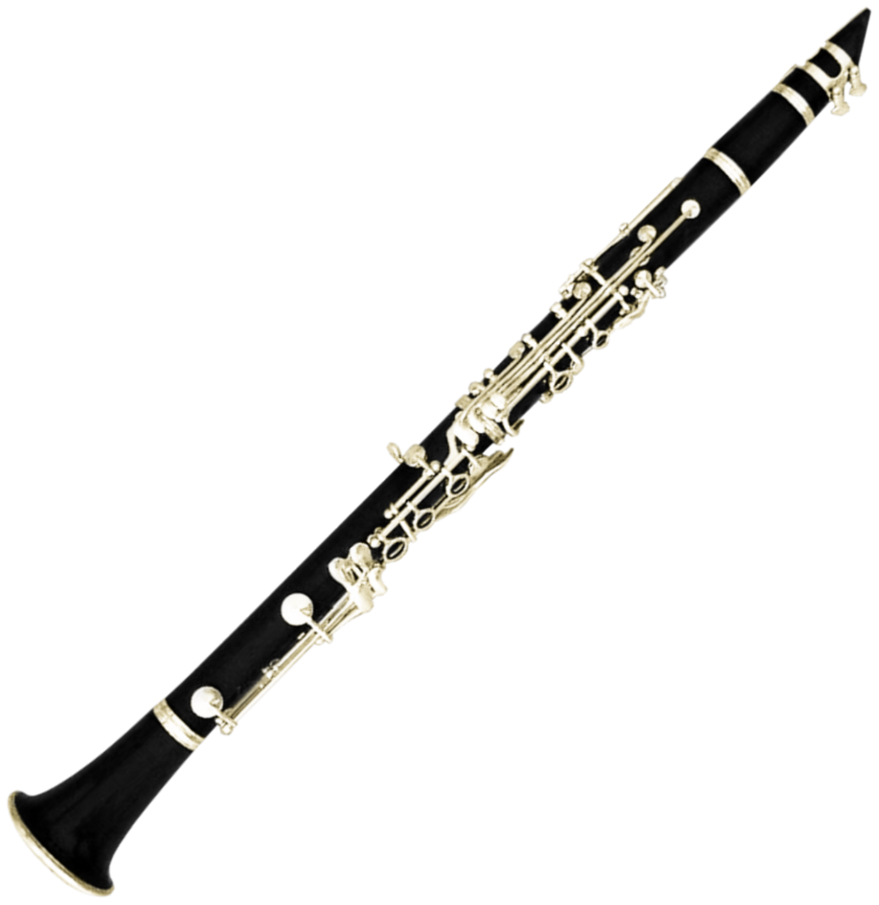
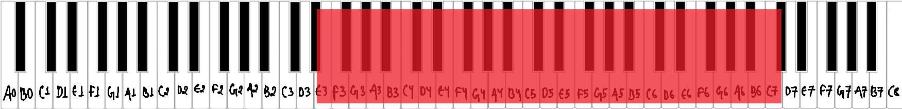
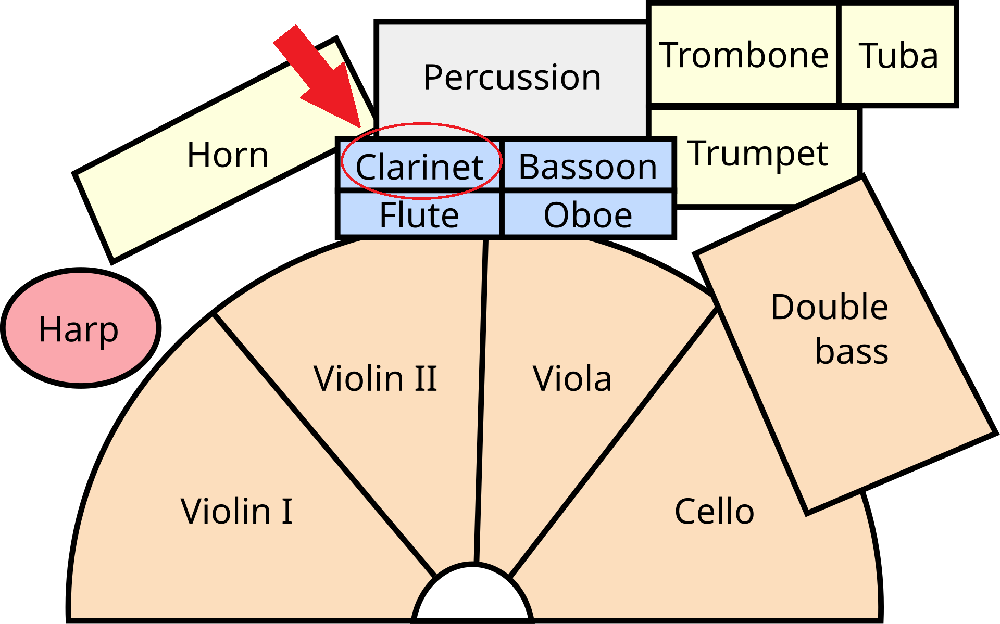
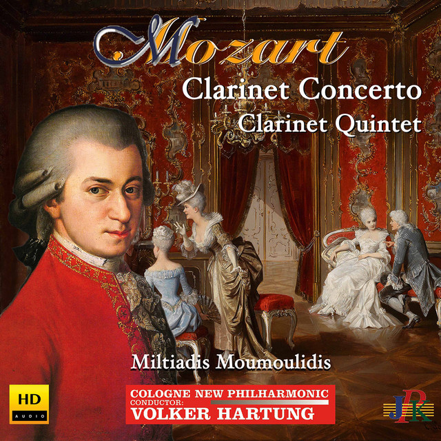
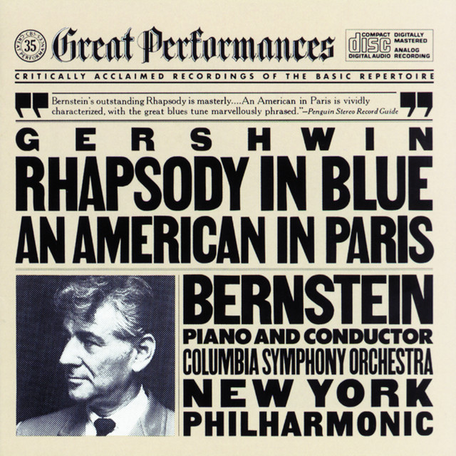
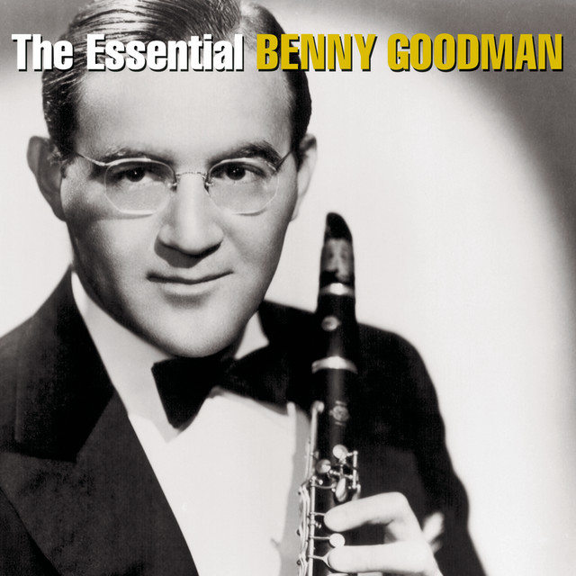
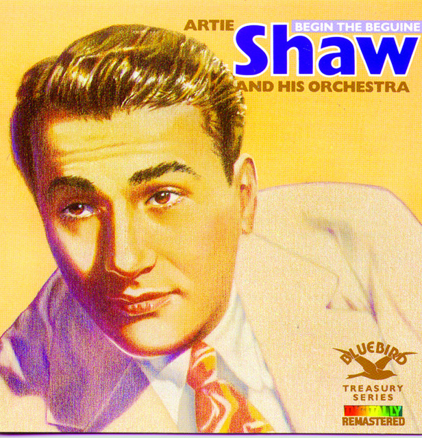

What is a clarinet?
The clarinet is a woodwind instrument with a cylindrical tube and a single reed attached to the mouthpiece. The player vibrates the reed with a stream of air, and keys and finger holes change the pitch. Its tone is warm and dark in the low register and bright in the high register. [1]

Musical range and clef
The clarinet has a written range from E3 to about C7. It is a transposing instrument, so the pitch you hear is a whole step lower than the note on the page. [2]
Clarinet parts are written in the treble clef. Because it is a transposing instrument, the written notes are adjusted so the player can use the same fingerings across the clarinet family. [3]


Where is the clarinet seated in an orchestra?
Woodwinds sit in the middle of the orchestra, behind the strings and in front of the brass and percussion. From the conductor's podium, the flutes are on the left of the woodwind rows, followed by the oboes, clarinets and bassoons toward the right. Clarinets sit just to the right of the oboes, near the center of the woodwind section. [4]

Popular songs/pieces that feature the instrument:

Clarinet Concerto in A major

Rhapsody in Blue

Sing, Sing, Sing

Begin the Beguine
References
- Wikipedia, "Clarinet".
- Wikipedia, "Clarinet".
- Wikipedia, "Clarinet".
- Rockford Symphony Orchestra, "Are all orchestras arranged on stage the same way?".